Глава 10
Государственное регулирование в области обеспечения единства измерений
Утверждение типа, поверка, метрологическая экспертиза, калибровка и государственный метрологический надзор: назначение процедур и оформление результатов.
Утверждение типа стандартных образцов или типа средств измерений
Стандартный образец – это материал, достаточно однородный и стабильный в отношении определенных свойств для того, чтобы использовать его при измерении или при оценивании качественных свойств в соответствии с предполагаемым назначением.
Тип средств измерений – это совокупность средств измерений, предназначенных для измерений одних и тех же величин, выраженных в одних и тех же единицах величин, основанных на одном и том же принципе действия, имеющих одинаковую конструкцию и изготовленных по одной и той же технической документации.
Тип стандартных образцов или тип средств измерений, применяемых
в сфере государственного регулирования обеспечения единства измерений, подлежит обязательному утверждению. При утверждении типа средств измерений устанавливаются показатели точности, интервал между поверками средств измерений, а также методика поверки данного типа средств измерений.
Решение об утверждении типа стандартных образцов или типа средств измерений, решение о внесении изменений в сведения об утвержденных типе стандартных образцов или типе средств измерений принимаются федеральным органом исполнительной власти, осуществляющим функции по оказанию государственных услуг и управлению государственным имуществом в области обеспечения единства измерений. Решение об утверждении типа стандартных образцов или типа средств измерений принимается на основании положительных результатов испытаний стандартных образцов или средств измерений в целях утверждения типа, решение о внесении изменений в сведения об утвержденных типе стандартных образцов или типе средств измерений принимается на основании положительных результатов испытаний стандартных образцов или средств измерений в целях утверждения типа, и (или) положительного заключения юридического лица, аккредитованного в соответствии с законодательством Российской Федерации об аккредитации в национальной системе аккредитации на выполнение испытаний в целях утверждения типа, и (или) заявления юридического лица или индивидуального предпринимателя, осуществляющих разработку, выпуск из производства, ввоз на территорию Российской Федерации, продажу и применение на территории Российской Федерации стандартных образцов или средств измерений.
Утверждение типа стандартных образцов или типа средств измерений подтверждается включением сведений об утвержденных типе стандартных образцов или типе средств измерений в Федеральный информационный фонд по обеспечению единства измерений. Федеральным органом исполнительной власти, осуществляющим функции по оказанию государственных услуг и управлению государственным имуществом в области обеспечения единства измерений, по заявлению юридического лица или индивидуального предпринимателя, осуществляющих разработку, выпуск из производства, ввоз на территорию Российской Федерации, продажу и применение на территории Российской Федерации стандартных образцов или средств измерений, выдается сертификат об утверждении типа стандартного образца или типа средства измерений. Интервал между поверками средства измерений и методика его поверки изменяются федеральным органом исполнительной власти, осуществляющим функции по оказанию государственных услуг и управлению государственным имуществом в области обеспечения единства измерений.
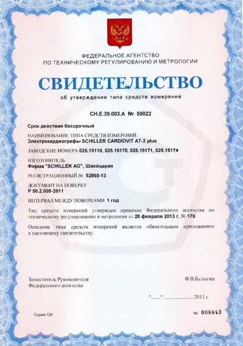
На каждый экземпляр средств измерений утвержденного типа, сопроводительные документы к указанным средствам измерений и на сопроводительные документы к стандартным образцам утвержденного типа наносится знак утверждения их типа (рис. 20). Конструкция средства измерений должна обеспечивать возможность нанесения этого знака в месте, доступном для просмотра. Если особенности конструкции средства измерений не позволяют нанести этот знак непосредственно на средство измерений, он наносится только на сопроводительные документы.
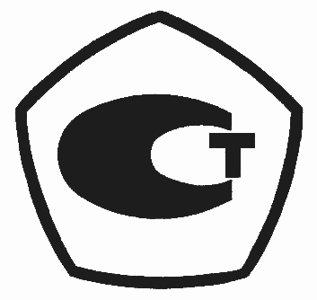
Испытания стандартных образцов или средств измерений в целях утверждения типа проводятся юридическими лицами, аккредитованными в соответствии с законодательством Российской Федерации об аккредитации в национальной системе аккредитации на выполнение испытаний в целях утверждения типа.
Сведения об утвержденных типах стандартных образцов и типах средств измерений, о внесенных в них изменениях включаются в Федеральный информационный фонд по обеспечению единства измерений.
Порядок проведения испытаний стандартных образцов или средств измерений в целях утверждения типа, порядок утверждения типа стандартных образцов или типа средств измерений, внесения изменений в сведения о них, установления и изменения интервала между поверками средств измерений, установления, отмены методик поверки и внесения изменений в них, порядок выдачи сертификатов об утверждении типа стандартных образцов или типа средств измерений, форма сертификатов об утверждении типа стандартных образцов или типа средств измерений, требования к методикам поверки средств измерений, требования к знакам утверждения типа стандартных образцов или типа средств измерений и порядок их нанесения устанавливаются федеральным органом исполнительной власти, осуществляющим функции по выработке государственной политики и нормативно-правовому регулированию в области обеспечения единства измерений. Порядок проведения испытаний стандартных образцов или средств измерений в целях утверждения типа и порядок утверждения типа стандартных образцов или типа средств измерений устанавливаются с учетом характера производства стандартных образцов и средств измерений (серийное или единичное производство).
Юридические лица и индивидуальные предприниматели, осуществляющие разработку, выпуск из производства, ввоз на территорию Российской Федерации, продажу и использование на территории Российской Федерации не предназначенных для применения в сфере государственного регулирования обеспечения единства измерений стандартных образцов и средств измерений, могут в добровольном порядке представлять их на утверждение типа стандартных образцов или типа средств измерений.
Поверка средств измерений
Поверка средств измерений — совокупность операций, выполняемых в целях подтверждения соответствия средств измерений метрологическим требованиям. Поверку проводят юридические лица и индивидуальные предприниматели, аккредитованные на её проведение в соответствии с законодательством Российской Федерации об аккредитации в национальной системе аккредитации. Для отдельных средств измерений Правительство РФ устанавливает требование о проведении поверки только государственными региональными центрами метрологии.
Виды поверки
Виды поверок:
Виды поверки и способы её выполнения
Первичная поверка проводится до ввода в эксплуатацию средств измерений, предназначенных для применения в сфере государственного регулирования обеспечения единства измерений. В процессе эксплуатации, в том числе после ремонта, такие средства измерений подлежат периодической поверке. Обязанность своевременно представлять их на поверку возлагается на юридических лиц и индивидуальных предпринимателей, применяющих их в указанной сфере.
При утверждении типа средства измерений устанавливают показатели точности, интервал между поверками и методику поверки. Межповерочный интервал для конкретного типа определяют по сведениям об утверждённом типе в Федеральном информационном фонде по обеспечению единства измерений и относящейся к нему документации. Самостоятельно переносить интервал с другого типа прибора нельзя.
внеочередная поверка (средств измерений) – это поверка средства измерений, проводимая до наступления срока его очередной периодической поверки.
Необходимость внеочередной поверки может возникнуть вследствие разных причин: ухудшение метрологических свойств средства измерений или подозрение
в этом, нарушение условий эксплуатации, нарушение поверительного клейма;инспекционная поверка (средств измерений) – это поверка, проводимая официально уполномоченным органом при проведении государственного метрологического надзора (контроля) за состоянием и применением средств измерений;
комплектная поверка (средств измерений) – это поверка, при которой определяют метрологические характеристики средства измерений, присущие ему как единому целому;
поэлементная поверка (средств измерений) – это поверка, при которой значения метрологических характеристик средств измерений устанавливаются по метрологическим характеристикам его элементов или частей. Данную поверку обычно проводят для средств измерений, измерительных систем или измерительных установок, когда неосуществима комплектная поверка;
выборочная поверка (средств измерений) – это поверка группы средств измерений, отобранных из партии случайным образом, по результатам которой судят о пригодности всей партии.
Поверка в России осуществляется в соответствии с Порядком проведения поверки средств измерений, требованиями к знаку поверки и содержанию свидетельства о поверке.
В соответствии с частью 2 статьи 13 Закона № 102-ФЗ поверку средств измерений осуществляют аккредитованные в соответствии с законодательством Российской Федерации об аккредитации в национальной системе аккредитации юридические лица и индивидуальные предприниматели, т. е. юридические лица и индивидуальные предприниматели должны иметь аттестат аккредитации
в области обеспечения единства измерений для оказания услуг по поверке средств измерений (рис. 21).
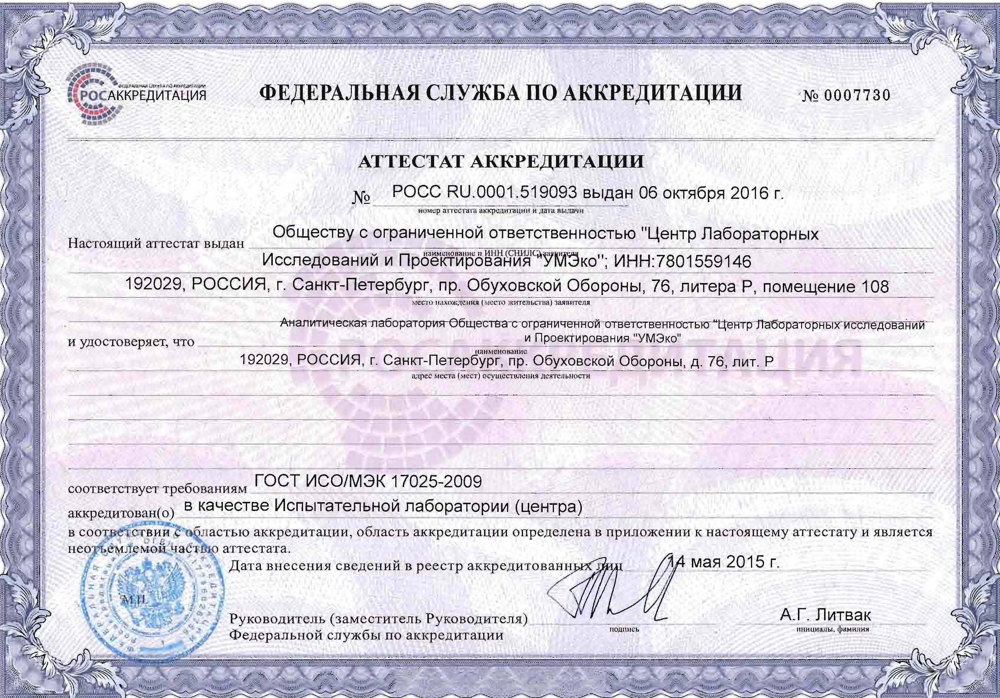
Поверку выполняют аккредитованные на соответствующие работы юридические лица и индивидуальные предприниматели. Работы проводят по методике поверки соответствующего типа средств измерений.
Межповерочный интервал и организация работ
Периодической поверке подвергается каждый экземпляр средств измерений, находящийся в эксплуатации, через установленный межповерочный интервал. В добровольном порядке владельцы средств измерений могут представлять на периодическую поверку средства измерений чаще установленного межповерочного интервала. Обязательное представление средств измерений на периодическую поверку чаще установленного межповерочного интервала устанавливается внеочередной поверкой.
Аккредитованные в соответствии с законодательством Российской Федерации об аккредитации в национальной системе аккредитации юридические лица и индивидуальные предприниматели осуществляют периодическую поверку средств измерений на основании графиков поверки (рис. 22), составляемых юридическими лицами или индивидуальными предпринимателями в соответствии с Порядком проведения поверки средств измерений, требований
к знаку поверки и содержанию свидетельства о поверке.
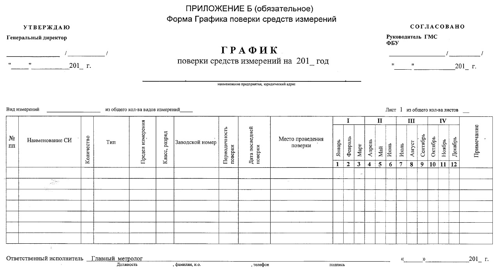
Интервал между поверками средств измерений (межповерочный интервал), а также методика поверки каждого типа средства измерений устанавливаются при утверждении типа средств измерений в соответствии с пунктом 1 статьи 12 Закона № 102-ФЗ.
Разработаны РМГ 74–2004, в соответствии с которыми длительность интервала между поверками (калибровками) зависит от интенсивности, условий эксплуатации, точности измерений, тенденций к износу и изменению во времени метрологических характеристик (дрейф характеристик) и колеблются от нескольких месяцев до нескольких лет и для большинства средств измерений составляют 1 год.
Для счётчиков воды, газа и электрической энергии межповерочный интервал зависит от утверждённого типа и исполнения прибора. Его устанавливают по описанию типа и сведениям Федерального информационного фонда по обеспечению единства измерений; дату поверки и сведения о её действительности проверяют по записи о конкретном экземпляре. Значения 6, 12 или 16 лет нельзя использовать как общие для всех приборов соответствующего назначения.
При вводе в эксплуатацию средств измерений после длительного хранения (более одного межповерочного интервала) проводится периодическая поверка.
Правительством РФ устанавливается перечень средств измерений, поверка которых осуществляется только аккредитованными в соответствии с законодательством РФ об аккредитации в национальной системе аккредитации государственными региональными центрами метрологии, в том числе средства измерений температуры тела человека, массы человека, силы, мощности, применяемые при диагностике работоспособности групп мышц человека и другие.
Работы и (или) услуги по поверке средств измерений, входящих в этот Перечень, оплачиваются по регулируемым ценам в соответствии с Правилами оплаты работ и (или) услуг по обеспечению единства измерений по регулируемым ценам. Работы и (или) услуги по поверке средств измерений, не вошедших в Перечень средств измерений, оплачиваются заинтересованными лицами в соответствии с условиями заключенных договоров (контрактов), если иное не предусмотрено законодательством Российской Федерации.
Подготовка средств измерений
Средства измерений представляются на поверку чистыми, расконсервированными, с техническим описанием, руководством (инструкцией) по эксплуатации, методикой поверки, паспортом (формуляром) (при наличии в комплекте средства измерений, указанном в описании типа средства измерений) и свидетельством о последней поверке, а также необходимыми комплектующими устройствами. При наличии у поверителя эксплуатационной документации на поверяемое средство измерений, а также методики поверки, представление данных документов вместе с средством измерений на поверку является необязательным и указывается при заключении договора (контракта) на проведение поверки средства измерений.
Подтверждение результатов поверки
Результаты поверки средств измерений подтверждаются сведениями, включёнными в Федеральный информационный фонд по обеспечению единства измерений. По заявлению владельца средства измерений или лица, представившего его на поверку, на прибор наносят знак поверки, и (или) выдают свидетельство о поверке, и (или) в паспорт (формуляр) вносят запись о поверке в установленном порядке; при непригодности выдают соответствующее извещение. Требования к знаку поверки и содержанию свидетельства устанавливаются нормативным порядком проведения поверки.
Знаки поверки
Знак поверки (рис. 23) представляет собой оттиск, наклейку или иным способом изготовленное условное изображение, нанесенные на средство измерений и (или) на свидетельство о поверке или паспорт (формуляр).
Знаки поверки должны содержать следующую информацию:
- знак Федерального агентства по техническому регулированию и метрологии – Росстандарта;
- условный шифр государственного научного метрологического института, государственного регионального центра метрологии, аккредитованного юридического лица или индивидуального предпринимателя;
- две последние цифры года нанесения знака поверки;
- индивидуальный шифр поверителя, присваиваемый конкретному лицу.
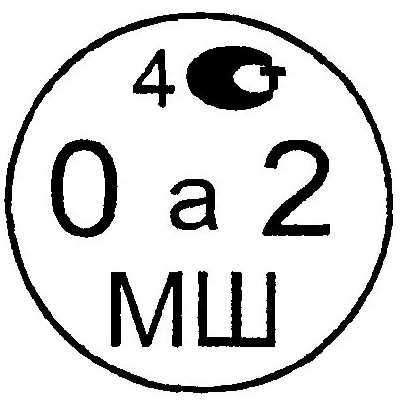
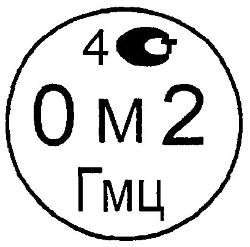
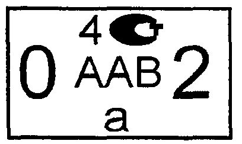
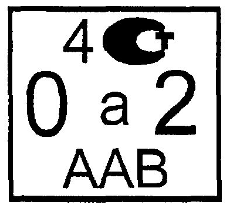
- знак поверки государственного регионального центра метрологии;
- знак поверки государственного научного метрологического института;
в) знак поверки юридического лица или индивидуального предпринимателя, применяемого
при клеймении средств измерений, выпускаемых из производства; г) знак поверки
юридического лица или индивидуального предпринимателя, применяемого при клеймении средств измерений, находящихся в эксплуатации или после ремонта.
В целях автоматизации идентификации средств измерений, а также в целях накопления информации о результатах поверок знак поверки содержит штрих-коды, если это допускает способ его нанесения. Если при этом указанный знак поверки наносится с использованием наклеек, то такие наклейки должны содержать только три поля: поле, в верхней части которого размещен логотип «РСТ», поле с нанесенным штрих-кодом и поле с датой проведения поверки (рис. 24).
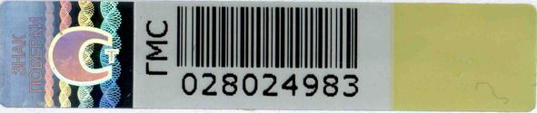
Наклейки со штрих-кодом должны иметь форму прямоугольника с размерами 10 х 50 мм и представлять собой непрозрачную самоклеющуюся структуру толщиной не более 50 мкм. Поле, в верхней части которого размещен логотип «РСТ», выполняется в виде голографического изображения, наблюдаемое визуально, также в данном поле предусматриваются специальные скрытые изображения, позволяющие идентифицировать подлинность наклейки с помощью специальных приборов и в лабораторных условиях.
Условные обозначения, место их расположения для расшифровки знака поверки приведено на рис. 25.
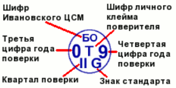
По номеру наклейки Вы можете получить информацию о поверке конкретного средства измерений. Номер наклейки находится под штрих-кодом.
Право наносить знак поверки имеют аккредитованные юридические лица или индивидуальные предприниматели в соответствии с их областью аккредитации.
Способы нанесения знака поверки могут быть следующими: ударный; давление на пломбу или специальную мастику; наклеивание; электрографический; электрохимический; другие способы (пескоструйный, методом выжигания).
Размеры знака поверки определяются в зависимости от размеров используемых приспособлений для их нанесения на средство измерений, а также от размеров свободного пространства в месте, предусмотренном для нанесения знака поверки. Рекомендуемый ряд диаметров круглых знаков поверки: 4; 6; 8; 10; 18 и 24 мм.
В случаях истечения сроков использования знаков поверки (например, истек год, квартал или месяц, в пределах которого мог быть нанесен соответствующий знак поверки) или в случаях, когда аккредитованное юридическое лицо или индивидуальный предприниматель прекратили свою поверочную деятельность, поверительные клейма уничтожаются путем приведения их в состояние, не допускающее их дальнейшее применение. Уничтожение поверительного клейма фиксируется актом.
Свидетельство о поверке и извещение о непригодности
Свидетельство о поверке средства измерений (рис. 26) должно содержать следующую информацию:
- номер свидетельства о поверке;
- дату, до которой действует свидетельство о поверке, включительно;
- наименование юридического лица или индивидуального предпринимателя, выполнившего поверку, регистрационный номер и срок действия аттестата аккредитации;
- наименование, тип, модификация, регистрационный номер в Федеральном информационном фонде по обеспечению единства измерений (если в состав средства измерений входят несколько автономных измерительных блоков, то приводится их перечень и заводские номера), серия и номер знака предыдущей поверки (если такие серия и номер имеются);
- заводской номер (если особенности конструкции или условия эксплуатации средства измерений не позволяют нанести его непосредственно на средство измерений или нет соответствующего раздела в паспорте);
- наименование документа, на основании которого выполнена поверка;
- наименование, тип, заводской номер, регистрационный номер (при наличии), разряд, класс или погрешность эталона, применяемого при поверке;
- перечень влияющих факторов, нормированных в документе на методику поверки, с указанием их значений;
- заключение о пригодности средства измерений (эталона);
- знак поверки (если особенности конструкции или условия эксплуатации средства измерений не позволяют нанести его непосредственно на средство измерений);
- должность руководителя подразделения, инициалы, фамилия, подпись;
- инициалы, фамилия, подпись поверителя, дата поверки.
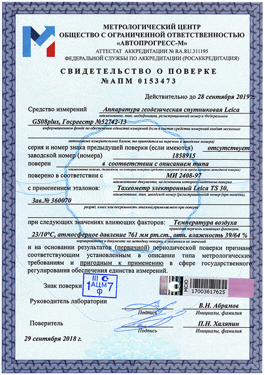
На оборотной стороне свидетельства о поверке, при наличии требования
в методике поверки, указывают метрологические характеристики (протокол поверки средства измерений оформляется в форме, рекомендуемой методикой
поверки, а в случае отсутствия рекомендаций – в произвольной форме. Если протокол поверки не укладывается на обратной стороне свидетельства о поверке, его приводят в виде приложения к свидетельству о поверке).
Если средство измерений по результатам поверки, проведенной аккредитованными юридическими лицами или индивидуальными предпринимателями, признано ими непригодным к применению, свидетельство о поверке аннулируется и выписывается извещение о непригодности к применению (рис. 27).
При оформлении свидетельства о поверке в соответствии с постановлением Правительства Российской Федерации от 2 апреля 2015 года № 311 «Об утверждении Положения о признании результатов калибровки при поверке средств измерений в сфере государственного регулирования обеспечения единства измерений» срок действия свидетельства о поверке устанавливается исходя из интервала между поверками, установленного при утверждении типа средства измерений, и исчисляется с даты проведения калибровки, указанной в сертификате калибровки. На оборотной стороне свидетельства о поверке должно быть указано, что поверка средства измерений произведена на основании признания результатов калибровки, в соответствии с постановлением № 311.
Сведения о результатах поверки средств измерений, находящихся в сфере государственного регулирования, аккредитованными юридическими лицами
и индивидуальными предпринимателями, проводившими поверку средств измерений, передаются в Федеральный информационный фонд по обеспечению единства измерений в соответствии с Порядком создания и ведения Федерального информационного фонда по обеспечению единства измерений.
Если на средство измерений было оформлено свидетельство о поверке
и (или) в паспорт (формуляр) нанесен знак поверки, то в случае утраты свидетельства о поверке и (или) паспорта (формуляра) на средство измерений выдается дубликат свидетельства о поверке с пометкой «Дубликат» в одном экземпляре. Дубликат оформляется по форме свидетельства о поверке в одном экземпляре с пометкой «Дубликат» (указывается в верхнем правом углу).
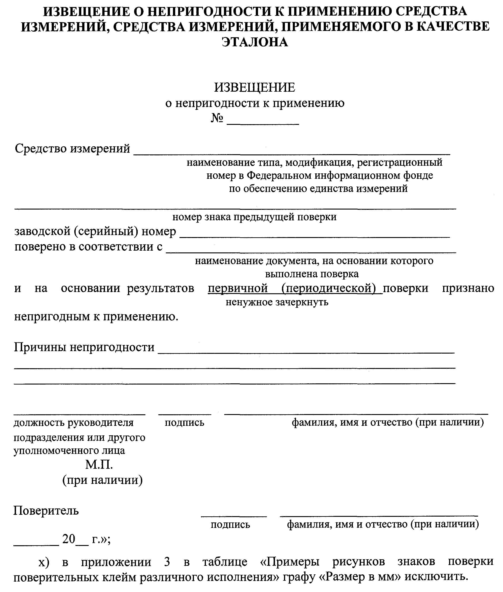
Федеральный информационный фонд и ФГИС «Аршин»
22 октября 2020 года вступил в Приказ Минпромторга России от 28 августа 2020 года № 2906, которым утвержден новый порядок создания и ведения Федерального информационного фонда по обеспечению единства измерений. Предыдущий Приказ Минпромторга от 20 августа 2013 года № 1328 и утвержденный им порядок утратили силу. Министерством юстиции Российской Федерации подписаны и зарегистрированы нормативные документы, уточняющие порядок выполнения работ и публикации сведений в области обеспечения единства измерений РФ, в том числе затрагивающие основной электронный реестр метрологической информации - ФГИС «Аршин».
ФГИС «Аршин» является онлайн-системой Росстандарта (Федерального Агентства по техническому регулированию и метрологии) и обеспечивает выполнение законодательных норм о единстве средств измерений. Официально – ФГИС «Аршин» – это вторая очередь реализации проекта Федерального информационного Фонда по вопросам обеспечения единства измерений.
Пользователями этого ресурса могут быть как юридические лица, так и физические лица предприниматели, которые имеют разрешение на осуществление работ по проведению поверок счетчиков, измерений концентраций растворов, расходов газа, воды и т. д. Кроме данных Росстандарта, в ФГИС «Аршин» также поступает информация и от других организаций: ГК «Росатом», ВНИИМС (Всероссийского научно-исследовательского института метрологической службы) и т. д.
Основная функция ФГИС «Аршин» – это сбор метрологической информации и отчетов, также она используется и для концентрации результатов поверок всех приборов, измерений в едином реестре. При этом их передача должна производиться в соответствии с требованиями государственных органов и в определенные сроки.
Кроме того, сайт ФГИС «Аршин» является своеобразной библиотекой, фонды которой включают:
- все нормативные и правовые документы РФ;
- информационные базы данных;
- международные документы и договоры;
- стандарты, применяемые для обеспечения единства измерений;
- сведения о средствах измерений и перечень требований государственного регулирования;
- методы измерений;
- сведения об утвержденных стандартах, типах единиц измерений, эталоны величин;
- сведения о проводимых поверках средств измерений и их результаты.
Сведения о результатах поверки передаёт в Федеральный информационный фонд по обеспечению единства измерений проводившее её аккредитованное лицо. По пункту 21 Порядка, утверждённого приказом Минпромторга России от 31 июля 2020 г. № 2510, срок согласовывается с лицом, представившим прибор на поверку, и не превышает 20 рабочих дней для средств измерений, применяемых в качестве эталонов единиц величин, и 40 рабочих дней для остальных средств измерений с даты поверки. Результат подтверждается записью в Фонде; свидетельство о поверке может выдаваться по заявлению. Для проверки сведений в ФГИС «Аршин» открывают раздел результатов поверки и находят запись о конкретном экземпляре по заводскому номеру и данным типа. В записи проверяют соответствие прибора, дату и результат поверки, сведения об исполнителе и срок действия результата.
Сведения о результатах поверки
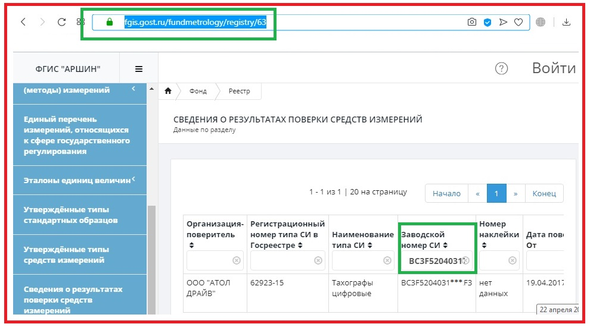
Передача сведений о результатах поверки в Федеральный информационный фонд по обеспечению единства измерений является обязанностью юридического лица или индивидуального предпринимателя, проводившего поверку. Право выполнять поверку связано с аккредитацией на соответствующие работы. Нарушения обязательных требований могут повлечь предусмотренные законодательством меры ответственности и меры в отношении аккредитации. Выражение «лишение лицензии на поверку» в данном случае неприменимо.
Бумажное свидетельство о поверке может оформляться по заявлению владельца средства измерений или лица, представившего его на поверку. Оно содержит предусмотренные порядком сведения о проведённой поверке и не заменяет включение результата в Федеральный информационный фонд по обеспечению единства измерений. Результаты поверки, удостоверенные по правилам, действовавшим до 24 сентября 2020 г., сохраняют действительность до окончания соответствующего межповерочного интервала; это переходное правило не освобождает от передачи сведений о новых поверках.
Метрологическая экспертиза
Метрологическая экспертиза документации; конструкторская метрологическая экспертиза, технологическая метрологическая экспертиза – это анализ
и оценивание экспертами-метрологами правильности применения метрологических требований, правил и норм, в первую очередь связанных с единством измерений.
Содержащиеся в проектах нормативных правовых актов Российской Федерации требования к измерениям, стандартным образцам и средствам измерений подлежат обязательной метрологической экспертизе. Заключения обязательной метрологической экспертизы в отношении указанных требований рассматриваются подготавливающими и принимающими эти акты федеральными органами исполнительной власти. Обязательная метрологическая экспертиза содержащихся в проектах нормативных правовых актов Российской Федерации требований к измерениям, стандартным образцам и средствам измерений проводится государственными научными метрологическими институтами.
Обязательную метрологическую экспертизу стандартов, проектной, конструкторской, технологической документации и других объектов проводят аккредитованные в соответствии с законодательством Российской Федерации об аккредитации в национальной системе аккредитации на выполнение обязательной метрологической экспертизы юридические лица и индивидуальные предприниматели.
Порядок проведения обязательной метрологической экспертизы содержащихся в проектах нормативных правовых актов Российской Федерации требований к измерениям, стандартным образцам и средствам измерений устанавливается федеральным органом исполнительной власти, осуществляющим функции по выработке государственной политики и нормативно-правовому регулированию в области обеспечения единства измерений.
В добровольном порядке может проводиться метрологическая экспертиза продукции, проектной, конструкторской, технологической документации и других объектов, в отношении которых законодательством Российской Федерации не предусмотрена обязательная метрологическая экспертиза.
Калибровка средств измерений
Желание иметь конкурентоспособную продукцию побуждает предприятия иметь измерительные средства, дающие достоверные результаты. Поэтому средства измерений, не предназначенные для применения в сфере государственного регулирования обеспечения единства измерений, могут в добровольном порядке подвергаться калибровке.
Калибровка (средств измерений) – это совокупность операций, устанавливающих соотношение между значением величины, полученным с помощью данного средства измерений и соответствующим значением величины, определенным с помощью эталона с целью определения метрологических характеристик этого средства измерений.
Поверку выполняют юридические лица и индивидуальные предприниматели, аккредитованные на её проведение; для отдельных средств измерений установлен специальный круг исполнителей. Калибровка средств измерений, не предназначенных для применения в сфере государственного регулирования обеспечения единства измерений, проводится в добровольном порядке. При её выполнении обеспечивают прослеживаемость к соответствующим государственным первичным эталонам, а при их отсутствии — к национальным эталонам иностранных государств. Юридические лица и индивидуальные предприниматели, выполняющие калибровку, могут добровольно пройти аккредитацию. Калибровку может выполнять и метрологическая служба предприятия при наличии необходимых условий и компетентности.
Однако добровольный характер калибровки не освобождает метрологическую службу предприятия от необходимости соблюдать определенные требования. Главное из них – прослеживаемость, т. е. обязательная привязка рабочего средства измерений к национальному (государственному) эталону, а при отсутствии соответствующих государственных первичных эталонов единиц величин - к национальным эталонам единиц величин иностранных государств. Таким образом, функцию калибровки следует рассматривать как составную часть национальной системы обеспечения единства измерений. В РФ создана Российская система калибровки (РСК). Структура РСК приведена на рис. 29.
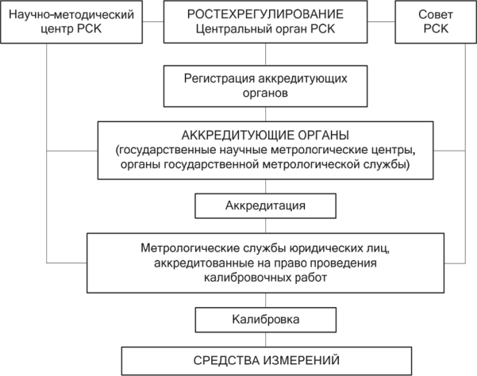
Деятельность Российской системы калибровки (РСК) регулируется следующими нормативными документами: Федеральный закон Российской Федерации «Об обеспечении единства измерений», РД РСК 01–2014, РД РСК 02–2020, РД 34.11.412–96. Выполняющие калибровку средств измерений юридические лица и индивидуальные предприниматели в добровольном порядке могут быть аккредитованы в области обеспечения единства измерений (рис. 30).
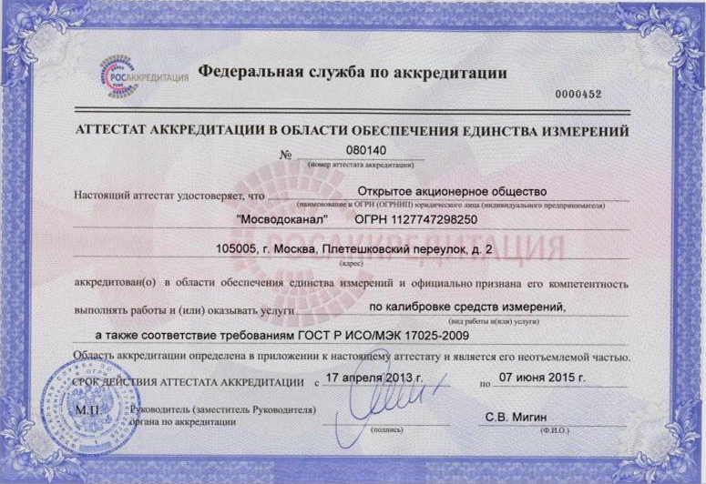
Результаты калибровки средств измерений удостоверяются калибровочным знаком (рис. 31), наносимым на средства измерений, или сертификатом
о калибровке (рис. 32), а также записью в эксплуатационных документах.
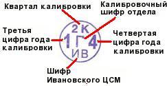
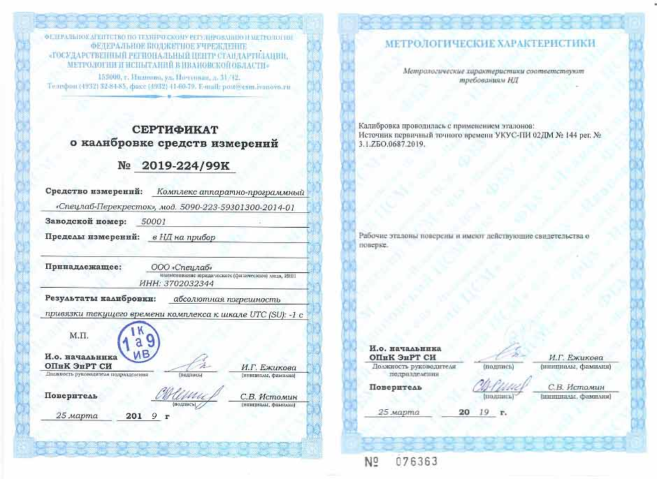
Российская система калибровки имеет свой знак, форма и размеры которого приведены на рис. 33.
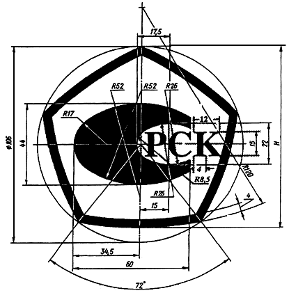
Знак РСК наносится на бланки, штампы РСК, а также на другие документы РСК.
Результаты калибровки средств измерений, выполненной юридическими лицами и индивидуальными предпринимателями, аккредитованными в соответствии с законодательством РФ об аккредитации в национальной системе аккредитации, могут быть использованы при поверке средств измерений в сфере государственного регулирования обеспечения единства измерений.
Порядок признания результатов калибровки при поверке средства измерений в сфере государственного регулирования обеспечения единства измерений и требования к содержанию сертификата калибровки, включая прослеживаемость, устанавливаются Правительством РФ.
Различие поверки и калибровки
В чем отличие поверки от калибровки?
Поверку проводят аккредитованные на соответствующие работы юридические лица и индивидуальные предприниматели. Для отдельных средств измерений поверку проводят только государственные региональные центры метрологии. Аккредитация исполнителей калибровки по закону № 102-ФЗ является добровольной; при калибровке необходимо обеспечить прослеживаемость и выполнение требований к результатам работ.
Поверка обязательна для средств измерений, применяемых в сфере государственного регулирования обеспечения единства измерений, калибровка же – процедура добровольная, поскольку относится к средствам измерений, не применяемых в сфере государственного регулирования обеспечения единства измерений.
Федеральный государственный метрологический надзор
Федеральный государственный метрологический надзор осуществляется за:
- соблюдением обязательных требований в сфере государственного регулирования обеспечения единства измерений к измерениям, единицам величин, а также к эталонам единиц величин, стандартным образцам, средствам измерений при их выпуске из производства, ввозе на территорию Российской Федерации, продаже и применении на территории Российской Федерации;
- наличием и соблюдением аттестованных методик (методов) измерений.
Федеральный государственный метрологический надзор распространяется на деятельность юридических лиц и индивидуальных предпринимателей, осуществляющих:
- измерения, относящиеся к сфере государственного регулирования обеспечения единства измерений;
- выпуск из производства предназначенных для применения в сфере государственного регулирования обеспечения единства измерений эталонов единиц величин, стандартных образцов и средств измерений, а также их ввоз на территорию Российской Федерации, продажу и применение на территории Российской Федерации;
- расфасовку товаров.
Юридические лица, индивидуальные предприниматели представляют уведомления о начале своей деятельности по производству эталонов единиц величин, стандартных образцов и средств измерений.
Федеральный государственный метрологический надзор осуществляется уполномоченными федеральными органами исполнительной власти, т. е. органами государственного надзора.